Every screen below was driven through a real browser against the running API and
Postgres. Balances quoted under each step were read back from the database after
the click, so the screenshots and the numbers agree.
Flow A · QR grantFlow B · Team grantFlow C · RedemptionFlow D · Manual grantCourse: Cálculo I · A · 2026-16 students · 2 teams · 38 movements
Entry
Sign in
Passwordless. The teacher types an email, receives a six-digit code, and lands
on their course list. There is no password to leak in a classroom full of
people looking at the projector.
1
Ask for a code
One field. The screen never claims more than it needs.
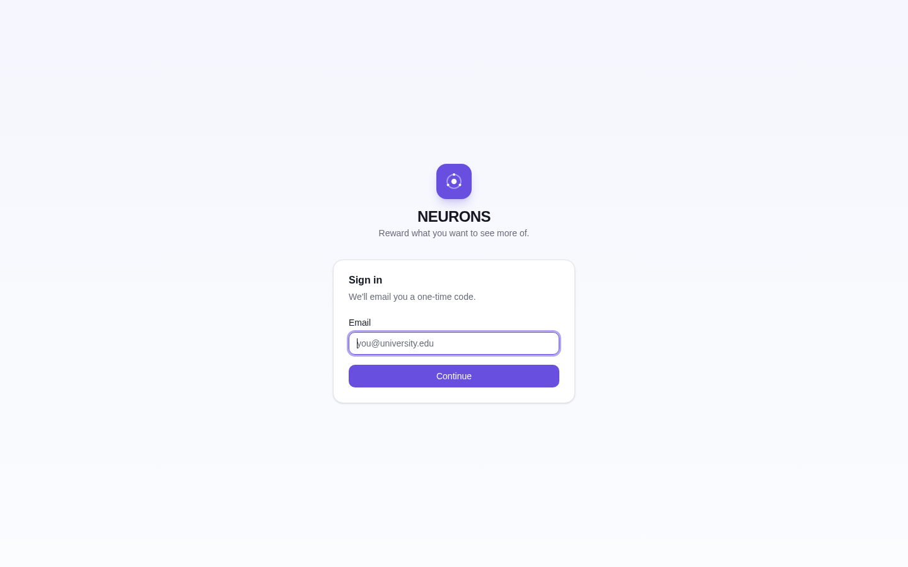
Email step — the only decision is which address.
2
Enter the code
The field auto-advances at six digits, so the common case needs no extra tap.
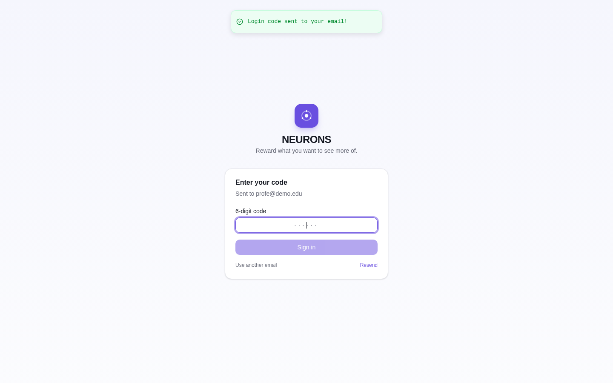
Code step, with escape hatches for a wrong address or a lost email.
3
Land on the courses
Each course carries its own vault. RN-01 makes neurons non-transferable
between courses, and the layout says so by never showing a combined total.
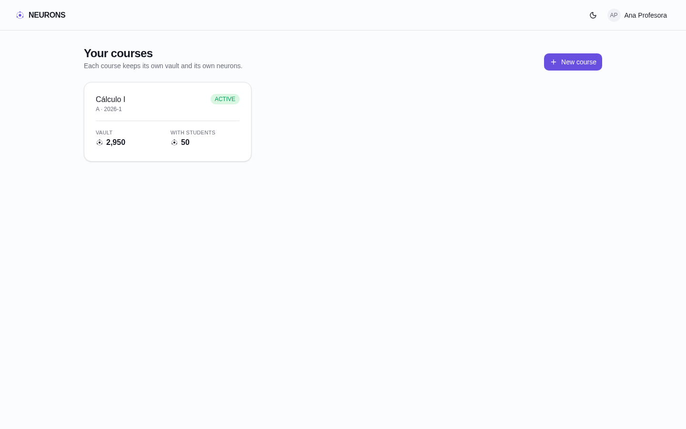
Vault 2,950 held by the classroom; 50 already in students' hands.
Overview
Course dashboard
What the teacher wants between classes: where the neurons went, who is engaged,
and which reasons are actually being used.
—
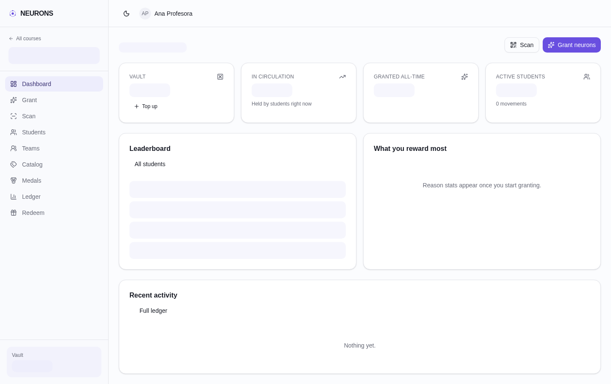
Vault and circulation up top, leaderboard with medal counts, reason usage as a
bar chart, and the raw activity feed underneath.
Why the reason chart matters. RN-10 forces a reason on every grant.
That constraint turns into free analytics: the chart is the honest answer to
“what am I actually rewarding?”, which is usually different from what a teacher
thinks they reward.
Flow D
Manual grant — the mid-class path
This is the screen that gets used while thirty people wait. Pick recipients,
tap a reason, confirm. Everything is one tap; nothing is a dropdown.
RN-05 no vault overdraftRN-08 positive amountsRN-10 reason required§11.9 large-amount reconfirm
1
Select students and a reason
Two students picked. Tapping Tarea excelente set the amount to its
suggested 3 — the reason carries the amount so the teacher makes one decision,
not two. The running total shows 6 because each recipient gets the full 3.
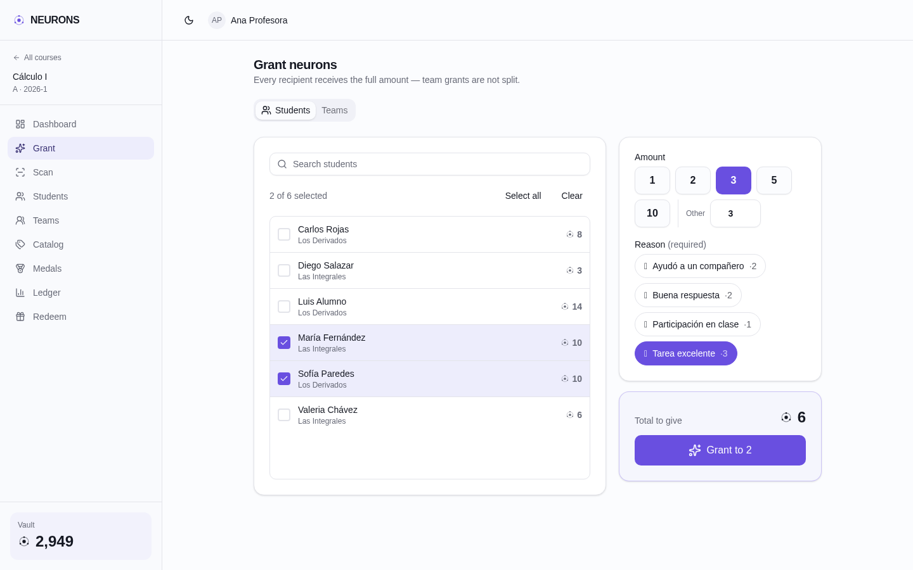
Amount presets, a separated free-entry box, and reason chips showing their suggested amounts.
2
Grant
Balances and the vault update in place; the sidebar total moves without a reload.
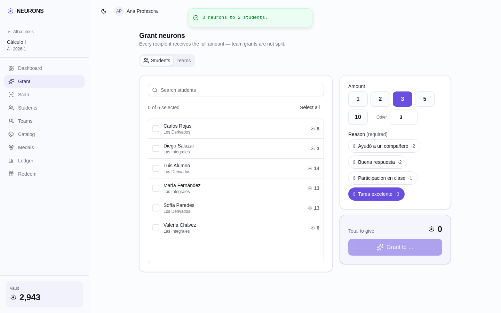
Confirmation toast, and both selected students now at their new balance.
Verified in Postgres → recipients 10 → 13 each · vault 2,949 → 2,943 (6 debited, not 3)
3
A large amount asks twice
§11.9. A slipped digit is the most likely real-world error, and it is the one
error a ledger cannot silently absorb — so the amount is restated in words
before anything is written.
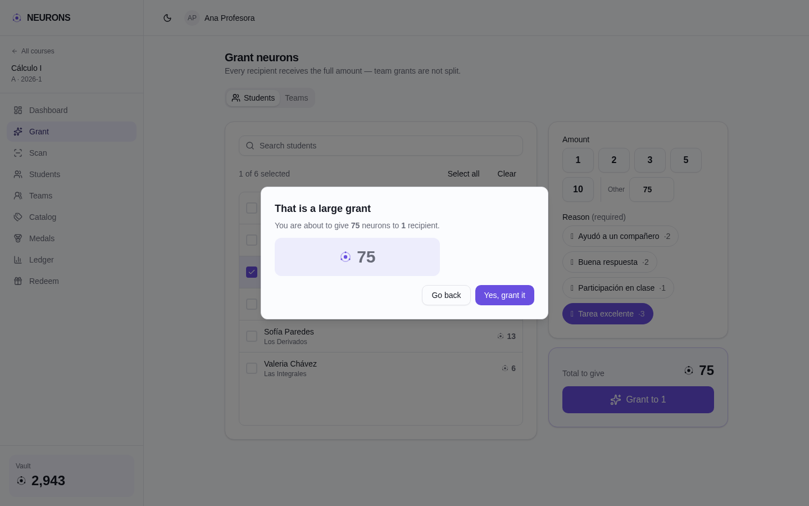
“You are about to give 75 neurons to 1 recipient.” Escape is the default.
API returns 409 LEDGER_CONFIRMATION_REQUIRED until the request repeats with confirmed: true
Flow B
Team grant — the amount is not divided
The single most misread rule in the spec, so the screen states it in a full
sentence rather than trusting an icon.
RN-07 every member receives the full amountRN-05 vault covers the sum
1
Pick a team
“Each of the 3 members receives 2 — the amount is not divided.” The total to
give reads 6, which is what actually leaves the vault.
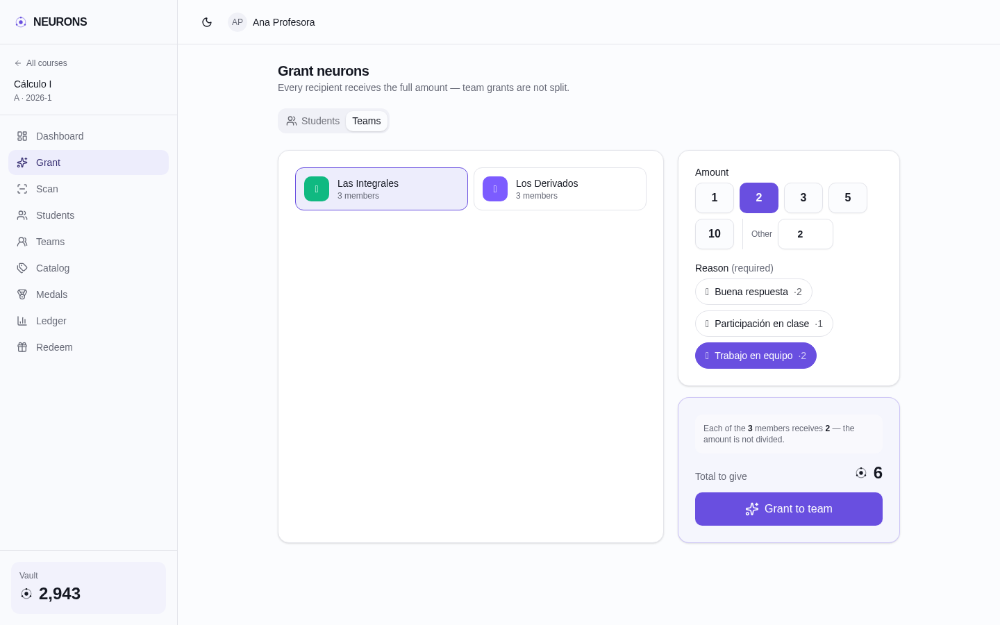
The rule is written where the mistake would be made.
2
Grant to the team
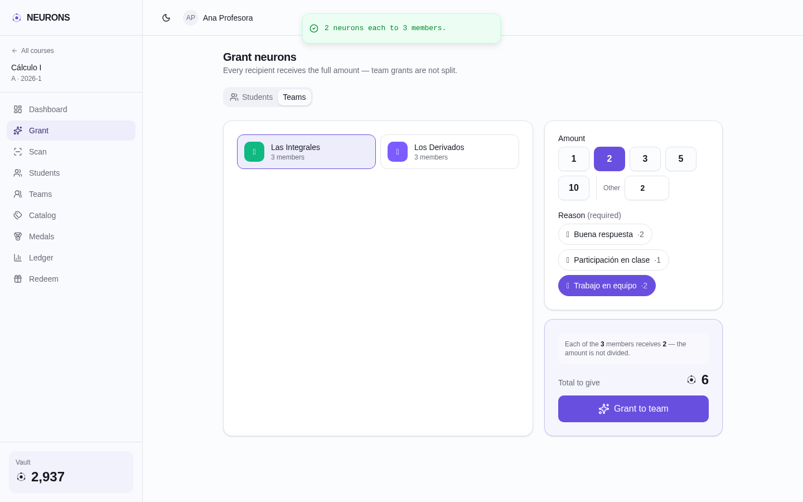
One action, three ledger entries — the ledger records people, not teams.
The student's phone mints a short-lived code; the teacher's device resolves it
to an enrollment and grants. Two devices, one transaction, paid exactly once.
RN-12 token bound to its classroomRN-13 short-lived, single-use§11.2 token entropy§11.3 idempotent confirm
1
The student shows a code
Minted on demand, 60-second TTL held in Redis, and the countdown is visible so
nobody wonders whether a stale screenshot still works. It does not.
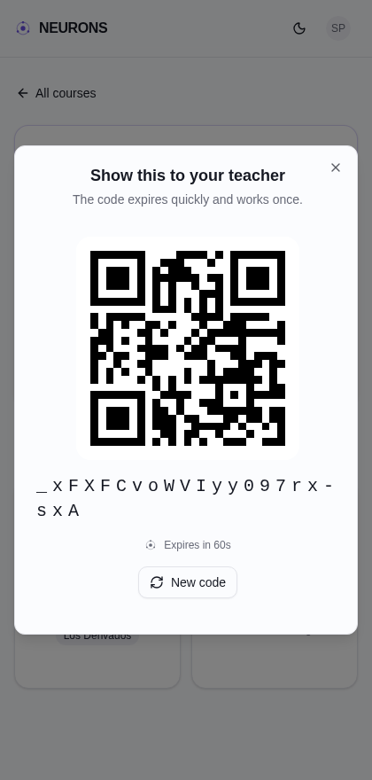
Single-use code with a live countdown, on a phone-sized viewport.
2
The teacher scans — or types
Camera first, manual entry always available. A lecture hall with no camera
permission still has to work.
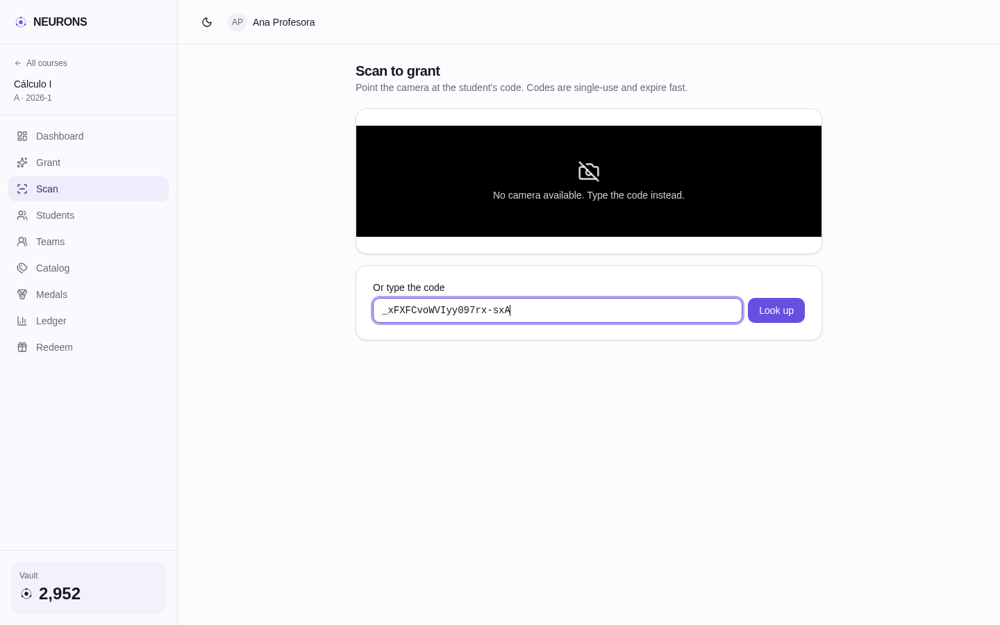
Camera unavailable here, so the viewfinder collapses and manual entry takes the space.
3
The code resolves to a person
Name, team and current balance appear before any amount is chosen — the teacher
confirms they are paying the right student, not the right string.
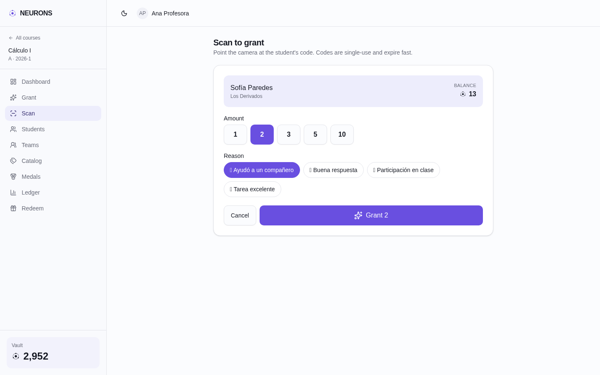
Resolved to Sofía Paredes · Los Derivados · balance 13.
4
Grant
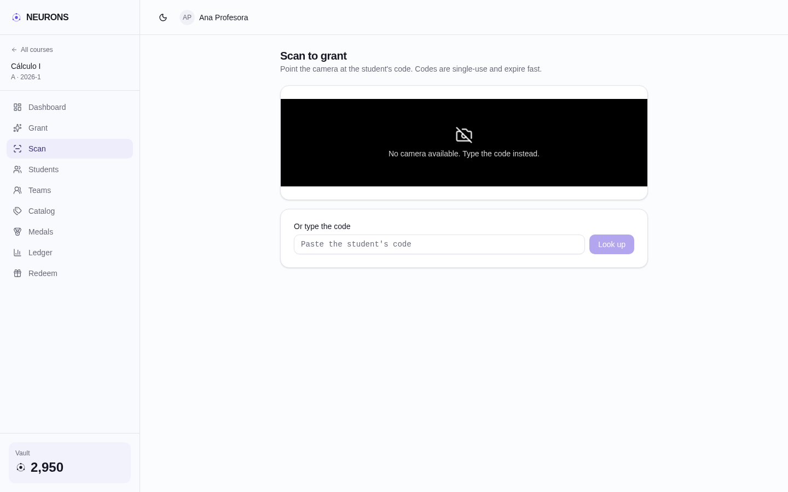
Full-bleed confirmation, readable at arm's length across a desk.
Verified → Sofía 13 → 15 · vault 2,952 → 2,950 · channel recorded as QR scan
Paid once, even on a double tap. The scan hands back a
grant_key derived from the token, and the grant that follows sends it as its
idempotency key. Replaying the same scan+grant pair was verified to move the
balance on the first call and no-op on the second (§11.3).
Flow C
Redemption — neurons go back to the vault
The student spends what they earned on something the course actually offers.
Nothing is destroyed; the neurons return to the classroom vault.
RN-04 balance never goes negativeRN-11 concept requiredRN-09 atomic and auditable
1
Pick a student and a benefit
The arithmetic is shown before the commit: current balance, what is being
returned, what is left. Benefits the student cannot afford are disabled rather
than allowed-then-rejected — RN-04 is enforced in the UI and again in the
database.
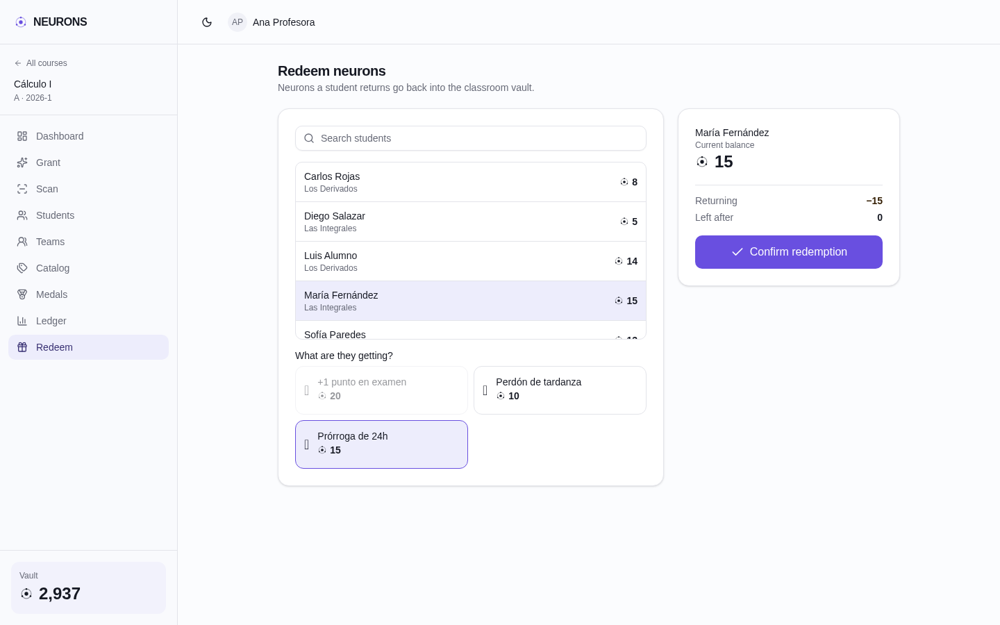
15 − 15 = 0. The 20-neuron benefit above it is greyed out at this balance.
2
Confirm
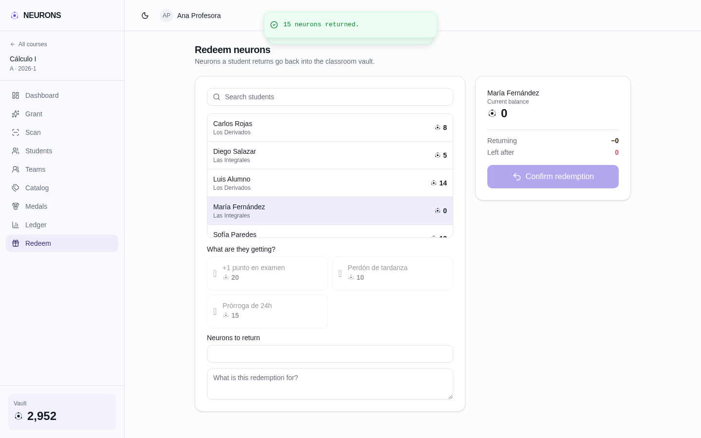
Redemption written; the vault grows by exactly what the student returned.
Verified → María 15 → 0, total returned 15 · vault 2,937 → 2,952
RN-04 confirmed at the API: three 20-neuron redemptions from a balance of 25 →
201, then 409 LEDGER_INSUFFICIENT_BALANCE twice, balance frozen at 5
Audit
Ledger & reversals
Append-only. A mistake is corrected by writing its opposite, never by deleting
the original — which is the only way a student can trust the number.
RN-09 atomic + auditableRN-15 reversals are new rows
1
Every movement, in order
Who, why, how much, through which channel, and the balance that resulted.
The QR grant from Flow A sits at the top with its channel recorded.
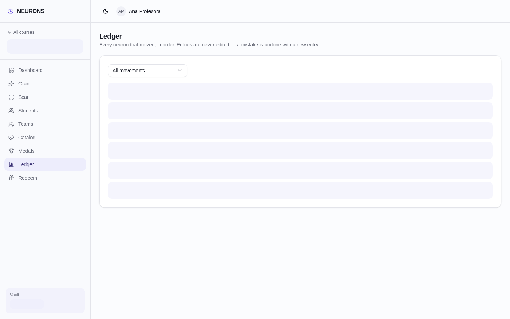
38 movements across the course, with a running balance-after on each row.
2
Reversing says what it does
“This does not erase anything. A new opposite entry is written, and both stay
visible in the ledger.” The dialog refuses to imply a delete, because the
system cannot do one.
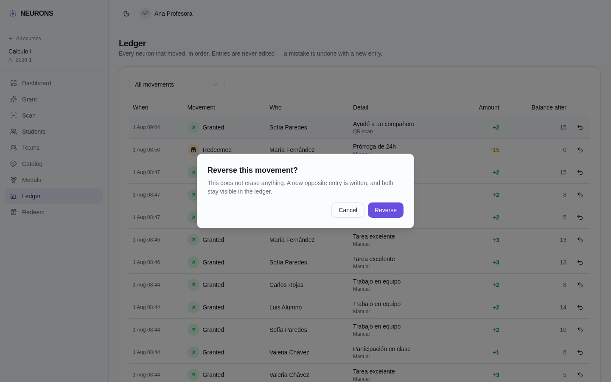
RN-15 stated in the words a teacher will actually read.
Verified at the API → reversing a spent grant is refused with
409 INSUFFICIENT_BALANCE; a second reversal of the same entry returns
409 LEDGER_ALREADY_REVERSED
Setup
Roster, teams, catalog, medals
The screens a teacher touches once a term rather than once a class.
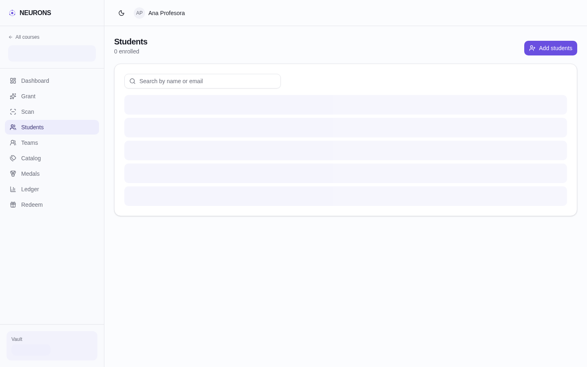
Students — balance and lifetime received side by side, so a low balance reads as “spent it”, not “never earned”.
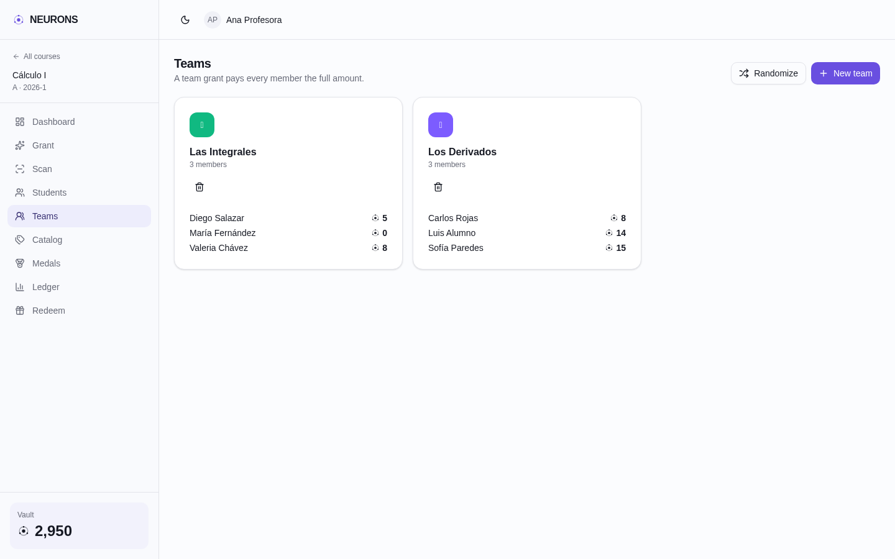
Teams — membership and per-member balances, with a randomizer for forming groups on the spot.
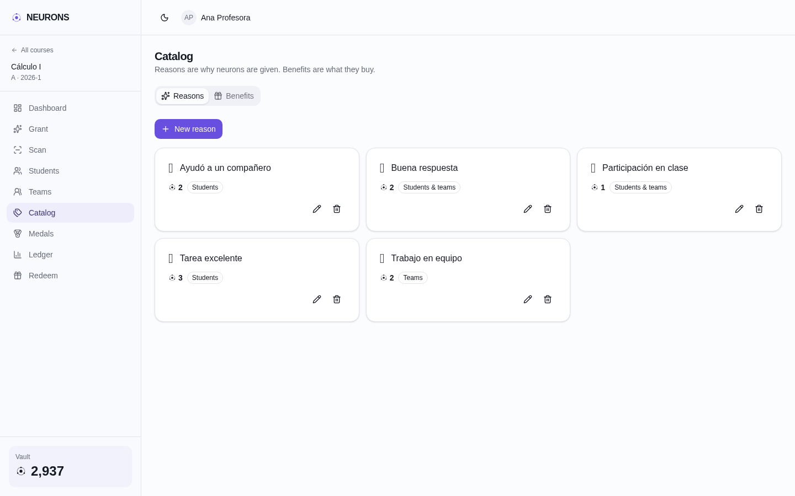
Catalog — reasons carry suggested amounts, benefits carry costs. This is what makes the grant screen one tap.
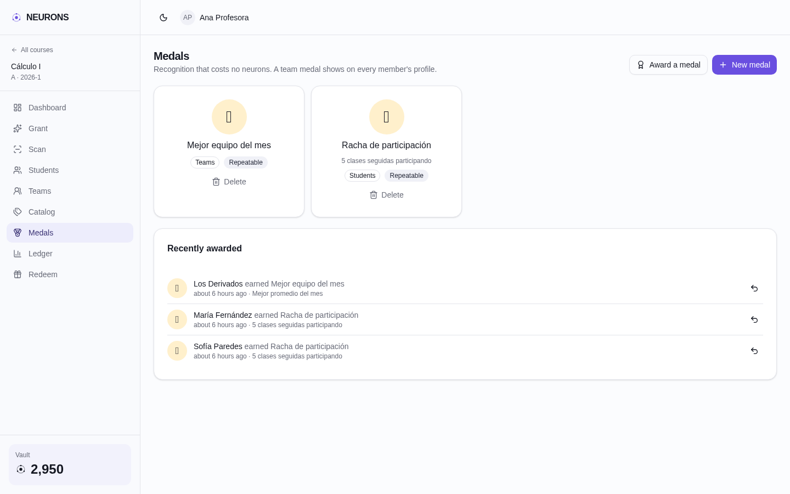
Medals — recognition that costs no neurons. A team medal appears on every member's profile (RN-14).
Student
The student's side
Phone-shaped, because that is the only device a student will open it on.
Read-mostly: see the balance, see why, present a code.
RN-01 one balance per courseRN-14 team medals on member profilesRN-17 closed courses freeze movement
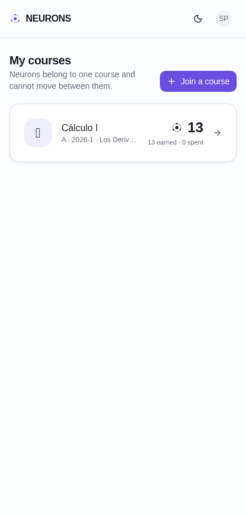
Courses — one card per course, each with its own separate balance. No combined total is ever shown.
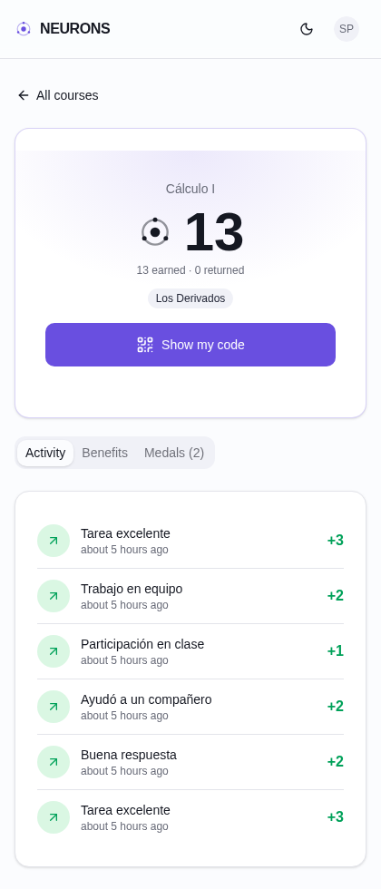
Wallet — balance, team, and the reason behind every movement. “+3 Tarea excelente” is the whole point of RN-10.
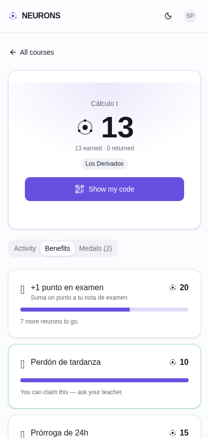
Benefits — what the balance is actually worth, priced in the same units they hold.
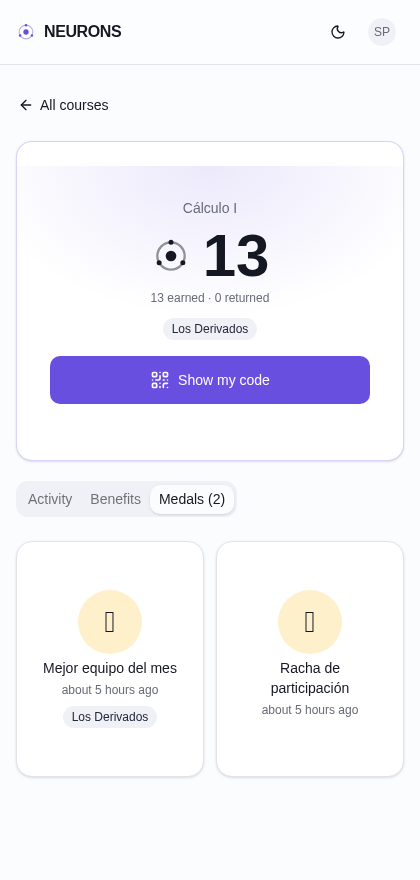
Medals — including the team medal earned by Los Derivados, shown on the member's own profile.
Result
What the walkthrough found
Driving the real thing surfaced four defects that neither the type checker nor
the API tests could have caught. All four are fixed and re-verified above.
Finding
Cause
Resolution
Scan page rendered blank
qr.stop() throws synchronously when the camera never started, taking the page down on unmount
Teardown is guarded by a started flag
fixed
Typed QR codes never resolved
The input upper-cased its value, but codes are case-sensitive base64url
Input passes text through untouched
fixed
Wallet showed “Course closed” on an active course
/me/classrooms/:id/enrollment returned no classroom name or status
MyEnrollment now joins the classroom and returns both
fixed
Camera panel pushed manual entry off-screen
The viewfinder held a full square even with no camera to show
Collapses to a short notice when unavailable
fixed
Reason chips showed no suggested amount
Seed data wrote default_amount; the field is suggested_amount
Seed corrected — the UI was already right
data
Rules exercised against the live system.
RN-01 course isolation · RN-04 no negative balance · RN-05 no vault overdraft ·
RN-07 team grants pay each member in full · RN-09 atomic, auditable movements ·
RN-10 reason required · RN-11 concept required · RN-12 tokens bound to a classroom ·
RN-13 short-lived single-use tokens · RN-14 team medals on member profiles ·
RN-15 reversals as new entries · RN-17 closed courses frozen ·
§11.3 idempotent confirmation · §11.9 large-amount reconfirmation.